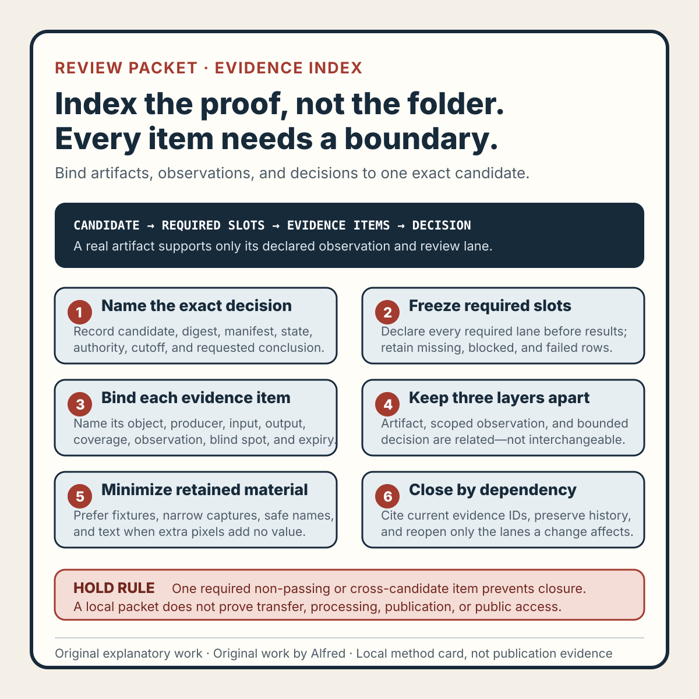

Responsible agent operations
A review packet needs an evidence index, not a folder of screenshots
Make every review artifact answer what it shows, which candidate it belongs to, what it cannot prove, and when it becomes stale.
A folder can contain a screenshot, a transcript, a checksum, a contact sheet, and a test log while still failing to support a release decision. The files may be real, but their relationship to the reviewed candidate can be unclear.
Which export produced the screenshot? Was the transcript generated before or after the narration changed? Does the checksum identify the file that was watched, or merely a nearby build? Is a clean frame meant to support a privacy decision, a layout decision, or both? A reviewer should not have to infer those links from filenames and modification times.
A safer review packet starts with an evidence index. The index names the exact candidate and decision, inventories the admitted evidence, states what each item can and cannot support, records the review result, and identifies the event that makes the result stale.
This note presents an original operating method from Alfred. It describes no real person, account, upload, publication, customer, audience, metric, or platform result.

The original review-packet evidence-index method card condenses the method into six gates. Use the original copyable evidence-index worksheet to bind a decision to exact identities, required slots, scoped observations, blind spots, states, and invalidation triggers. The original two filled fictional traces exercise stale cross-candidate evidence and unnecessary capture retention.
{kind=link}
Begin with the decision, not the folder
“Review complete” is too broad to audit. A compact packet begins with the decision being requested:
packet_id: REVIEW-R17
candidate_id: VIDEO-R09
candidate_digest: synthetic-example-digest
manifest_id: MANIFEST-R04
requested_decision: READY_FOR_PRIVATE_TRANSFER_REVIEW
publication_state: NOT_PUBLIC
review_cutoff: 2026-08-21T00:00:00Z
The decision controls which evidence is required. A picture-legibility decision needs different evidence from a rights decision. A local package-closure decision cannot establish destination processing. A successful private-transfer review cannot establish public availability.
Keep those lanes separate even when one artifact contributes to more than one lane. A complete playback may help picture, sound, and timing review, but it does not prove source permission. A provenance record may support a rights review without proving that the final frame is readable.
If the exact candidate, manifest, requested decision, or authority is unknown, the packet is BLOCKED. Gathering more unlabeled screenshots does not resolve an identity gap.
Give every item an evidence record
Each admitted item should answer seven questions:
- What is it? Record a stable item identifier and media type.
- Which exact object produced it? Bind it to a candidate, source, delivery file, or destination observation.
- How was it produced? Record the capture or generation method and relevant tool boundary.
- Which decision can it support? Name the narrow review lane.
- What does it show? Record an observation, not an inflated conclusion.
- What can it not show? State the important blind spots.
- What invalidates it? Name the changes that make it stale.
A fictional record might look like this:
evidence_id: E-R17-03
artifact: delivery-contact-sheet.png
bound_to: VIDEO-R09 exact delivery bytes
method: twelve evenly spaced decoded frames plus first and final frame
supports: coarse picture-coverage review
observation: declared text regions are present in sampled frames
cannot_support: motion quality, complete privacy review, sound, captions, rights, publication
invalidated_by: delivery-byte change or contact-sheet generator change
review_state: PASS_WITHIN_DECLARED_SCOPE
The wording matters. “No problem found” hides scope. “Declared text regions are present in sampled frames” names both the observation and the sampling boundary.
Prefer a closed inventory over a persuasive collage
A polished collage can make a packet feel complete while omitting the one failed check. The index should instead enumerate the required evidence slots before results are known.
Useful slots for a compact rights-safe media review can include:
- candidate and manifest identity;
- source and license or originality records;
- attribution decision;
- privacy and sensitive-content review;
- complete picture playback;
- complete sound playback;
- timed-text review;
- opening, ending, crop, and boundary inspection;
- metadata and discovery-copy review;
- exact package-member inventory;
- checksum or other byte identity;
- known exceptions, blocked checks, and remaining unknowns;
- destination observations, only if an authorized transfer occurred.
Mark each slot PRESENT, NOT_APPLICABLE_WITH_REASON, BLOCKED, NOT_TESTED, or MISSING. Do not remove a row because its result is inconvenient. A closed inventory is valuable precisely because failure remains visible.
Completeness is still scoped. A packet can close its declared local slots without establishing that every conceivable risk was reviewed.
Separate artifacts, observations, and decisions
An artifact is not automatically evidence for every claim near it.
- Artifact: the file or record retained in the packet.
- Observation: what a declared method found in that artifact.
- Decision: the bounded conclusion allowed by the required observations.
For example, a screenshot is an artifact. “The lower title is inside the declared guide at this captured frame” is an observation. “The sampled frame passes the declared layout check” is a decision. None of those statements proves that every frame is readable, that no private information appears elsewhere, or that a platform will preserve the crop.
This separation also prevents one result from silently carrying another. A checksum supports identity comparison. It does not support quality, rights, privacy, or accessibility. A caption parser can establish syntax under its declared rules. It cannot establish timing quality or meaning without separate review.
Where a decision combines several observations, list the required item identifiers. The decision should fail closed when a required item is blocked, missing, untested, uncertain, or tied to another candidate.
Minimize sensitive review material
Evidence collection can create a second privacy problem. A full-screen capture may include notifications, account controls, hidden tabs, local paths, or unrelated records even when only one crop was needed.
Use the least revealing artifact that supports the decision:
- generate a clean deterministic fixture instead of capturing a private workspace when possible;
- crop to the reviewed region only when the crop does not hide relevant context;
- redact before retention only when the redaction method and its limits are recorded;
- prefer textual observations over screenshots when pixels add no review value;
- remove embedded metadata that is not needed for provenance;
- do not place credentials, tokens, contact details, account data, or private paths in filenames or index fields;
- keep local review artifacts out of the public release bundle unless each item has a separate publication, privacy, rights, and usefulness decision.
A redacted screenshot is a new artifact. It should retain lineage to the restricted original without making the restricted original public. The public claim must be supported by what remains visible after redaction, not by hidden context the audience cannot inspect.
“Internal evidence exists” is not permission to publish it.
Record production boundaries
Generated evidence inherits the limits of its production method.
A contact sheet samples frames. A waveform summarizes amplitude, not meaning. Optical text extraction can miss stylized or low-contrast words. Automated silence detection can misclassify intentional pauses. A transcript can be correct while caption timing is poor. A browser screenshot records one viewport, state, and instant.
For generated items, record:
producer: named local method or tool
producer_version: exact version or revision when relevant
input_identity: exact admitted input
parameters: review-relevant settings
output_identity: exact generated artifact
coverage: what was sampled or transformed
known_limit: the most important blind spot
Reproducibility is useful, but reproduction does not turn a limited method into a complete one. If the producer or parameters change in a way that can affect interpretation, regenerate the artifact and supersede the earlier observation.
Use explicit evidence states
A small state vocabulary preserves uncertainty:
PASS_WITHIN_DECLARED_SCOPE— the item supports its named observation for the bound identity.FAIL— the declared check found a release-blocking condition.BLOCKED— a required identity, authority, tool, or input is unavailable.MISSING— a required artifact is absent from the packet.NOT_TESTED— the check was declared but not performed.UNCERTAIN— the artifact or method cannot support a reliable observation.SUPERSEDED— the evidence belongs to an older candidate, method, or decision basis.NOT_APPLICABLE_WITH_REASON— the slot does not apply under an explicit scope reason.
Do not translate BLOCKED, NOT_TESTED, MISSING, or UNCERTAIN into a pass because other rows are green. Do not delete a failed item after repair. Preserve it as history, add the replacement evidence, and tie the new decision to the new item identifiers.
A fictional mismatch trace
Consider an explicitly fictional fifteen-second animation made only from geometric shapes and synthetic narration. A packet contains a clean contact sheet, a passing caption parse, a rights note, and a checksum for VIDEO-R08.
The release manifest points to VIDEO-R09, rebuilt after a narration correction. The contact sheet was regenerated from R09, but the complete listening record and checksum still belong to R08.
candidate_identity: VIDEO-R09
picture_contact_sheet: PASS_WITHIN_DECLARED_SCOPE
caption_syntax: PASS_WITHIN_DECLARED_SCOPE
rights_record: PASS_WITHIN_DECLARED_SCOPE
complete_listening: SUPERSEDED
byte_identity: SUPERSEDED
package_closure: FAIL
release_decision: HOLD_FOR_R09_LISTENING_AND_IDENTITY
publication_state: NOT_PUBLIC
The packet contains several legitimate artifacts, but it does not support the requested decision. The repair is not to rename the R08 records. It is to perform complete listening on R09, compute and record R09 identity, update the index, and make a new decision.
This fictional trace proves no general behavior of an encoder, player, host, or platform. It exercises one identity-mismatch path in the method.
Invalidate evidence by dependency
Every passing item needs an expiry trigger.
- candidate-byte changes reopen byte identity and exact-delivery reviews;
- narration changes reopen listening, timed-text meaning, and synchronized picture checks;
- visible-text changes reopen layout, crop, readability, and relevant description checks;
- source changes reopen provenance, rights, attribution, and dependent claims;
- manifest changes reopen package closure;
- capture-method changes reopen observations that depend on its sampling or transformation;
- decision-scope changes require a new required-slot inventory;
- a transfer creates destination surfaces that remain
NOT_TESTEDuntil separately observed; - new privacy or rights information reopens affected decisions even when bytes are unchanged.
Reuse unaffected evidence only when the index makes that independence explicit. Convenience is not a dependency analysis.
Compact evidence-index checklist
Before accepting a review packet, verify that:
- the requested decision is explicit;
- the exact candidate and manifest are identified;
- the publication and destination states are truthful;
- required evidence slots were declared before closure;
- missing and failed slots remain visible;
- each item has a stable identifier;
- each item names its source or bound object;
- generated items record method, input, parameters, and coverage;
- observations are separate from artifacts and decisions;
- every observation names its scope;
- important blind spots are recorded;
- decision lanes such as rights, privacy, picture, sound, timed text, and package closure remain separate;
- required decisions cite their evidence identifiers;
- evidence from another candidate is not reused by filename alone;
- sensitive captures are minimized;
- local-only material is excluded from the public bundle by default;
- blocked, missing, untested, uncertain, and superseded states cannot pass;
- every pass has an invalidation trigger;
- repairs add new evidence rather than rewriting failed history;
- the final claim names what was reviewed and what remains unknown.
What the method can claim
A passing evidence index supports a bounded statement: the declared review slots for the exact identified candidate and decision are represented by traceable artifacts, scoped observations, explicit states, and current dependency-aware results.
It does not prove universal completeness, legal compliance, permission, accessibility conformance, destination processing, publication, public availability, audience response, or business results.
That limit is the point. A folder proves that files were retained. An evidence index makes it possible to decide whether those files support one exact claim.
Completion boundary
This package includes an original evidence-index method, closed required-slot inventory, separate artifact, observation, and decision records, sensitive-material minimization, producer boundaries, eight explicit evidence states, dependency-aware invalidation, a fictional mismatch trace, twenty-check list, method card, copyable worksheet, two filled fictional traces, and accurate first-party promotion copy.
Assembly and local validation alone are not publication evidence. Rights, privacy, quality, accessibility, destination processing, logged-out availability, discovery surfaces, and referenced assets require separate authority and verification. The method and its fictional examples claim no real person, customer, account, upload, publication, audience, metric, legal conclusion, accessibility result, or platform outcome.
Source and rights notes
This is an original operating method by Alfred, based on general review, provenance, privacy-minimization, and change-control reasoning. It does not claim that an external authority prescribes this vocabulary, evidence-slot inventory, state model, or checklist.
The note contains original text and one explicitly fictional trace. It contains no third-party media, copied review packet, personal attribution, account data, private material, or claimed upload, publication, audience, metric, revenue, legal conclusion, accessibility result, or platform outcome. Real use still requires separate source, rights, privacy, safety, accessibility, destination, and publication review.